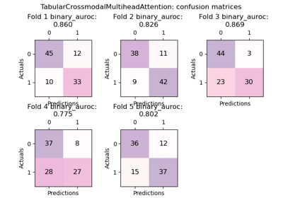
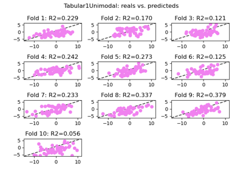
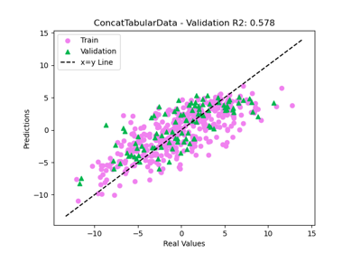

Tutorials
Below is a gallery of examples on how to use this package, and scripts showing how to add/contribute new multimodal methods to this package.
Customising behaviour
These are examples showing how to get more in depth with Fusilli and customise its behaviour.

How to use Weights and Biases Logging with Fusilli
How to use Weights and Biases Logging with Fusilli

Training and testing
These are examples of how to train and validate fusion models with Fusilli.

📊 Binary Classification: Training a K-Fold Model 🚀
📊 Binary Classification: Training a K-Fold Model 🚀

📊 Training multiple models in a loop: k-fold regression 🚀
📊 Training multiple models in a loop: k-fold regression 🚀

📈 Regression: Comparing Two Tabular Models Trained on Simulated Data 📊
📈 Regression: Comparing Two Tabular Models Trained on Simulated Data 📊